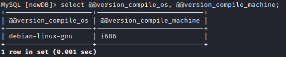

User Defined Functions (UDF)
UDF means User Defined Functions in MySQL. It’s like coding
your own functions inside a DLL and calling them inside MySQL. We are going to use the “lib_mysqludf_sys_64.dll” DLL
library which can be found inside the Metasploit framework. You can use the UDF libraries based on the OS and
architecture that is inside your Metasploit installation directory
“/usr/share/metasploit-framework/data/exploits/mysql/”.
Click here for the github
link to the files.Check the architecture of MySQL running
‘@@version_compile_os’ → architecture of the MySQL instance
‘@@version_compile_machine’ → architecture of the
operating system.
mysql> select @@version_compile_os, @@version_compile_machine;
# alternative
mysql> show variables like '%compile%';
 In this case we are
running MySQL inside a 32-bit Debian Linux OS.
....
Bibliography:
https://osandamalith.com/2018/02/11/mysql-udf-exploitation/